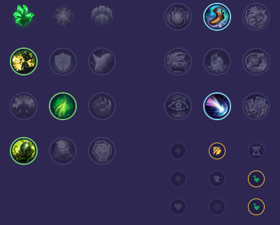

Starter: Pierścień Dorana 2x Mikstura Zdrowia Core Bulid: Plemienna Zbroja Buty Prędkości Stalowe Serce Full Bulid: Kolosalna Hydra Oblicze Ducha Kolczasta Kolczuga

Słaby przeciwko: - Garen - Aatrox - Yone - Gwen - Irelia - Singed Dobry przeciwko: - Darius - Malphite - Jax - Renekton - Cho'Gath - Teemo